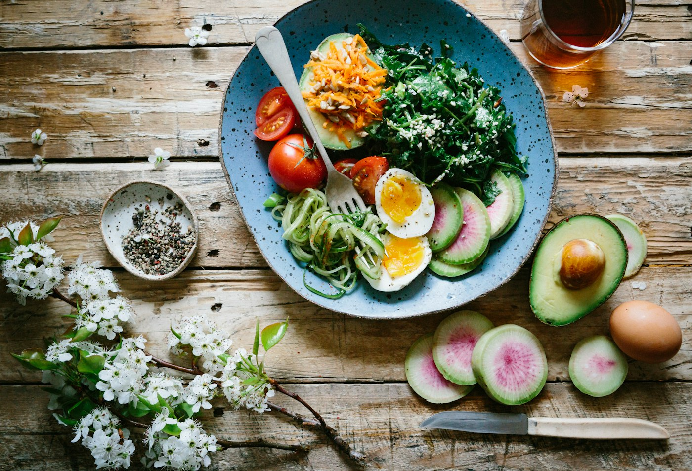
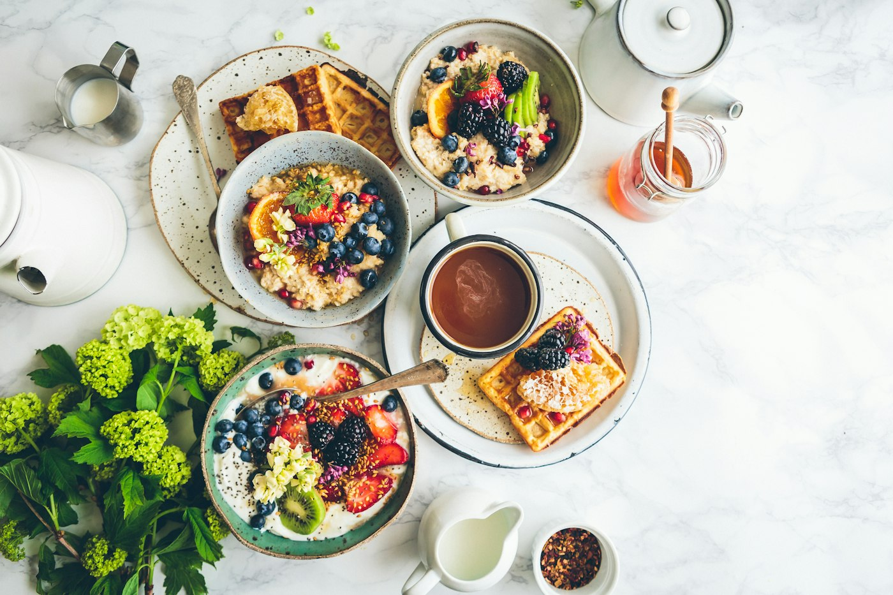

Широкий список продуктов
Молоко, зелень, яйца и остатки ужина живут в одном месте.
Свежее остаётся дома
Один список того, что уже в холодильнике. Сроки видны сразу, и еда уходит в тарелку, а не в мусор.
Почему FridgeFlow
Молоко, зелень, яйца и остатки ужина живут в одном месте.

То, чему осталось два дня или меньше, видно без поиска по полкам.

Перед магазином видно, что уже есть дома.
Сегодня
Срок
на исходе
Сначала то, что испортится раньше всего.
Проблема
Продукты покупают с запасом, а потом теряют из виду. Без срока годности под рукой зелень, молоко и вчерашний ужин оказываются в мусоре.
Одно место
FridgeFlow собирает продукты в одном месте. Видно, что уже есть и сколько осталось, поэтому одно и то же не покупается снова.
Молоко, яйца, шпинат, йогурт
Сроки
То, что испортится раньше, видно сразу. Сначала зелень и молочное, потом всё, у чего ещё есть время.
Из того, что есть
Рецепт собирается из продуктов, которые уже дома. Они уходят в тарелку, пока срок годности ещё не вышел.
Омлет, шпинат и то, что осталось со вчера
FridgeFlow